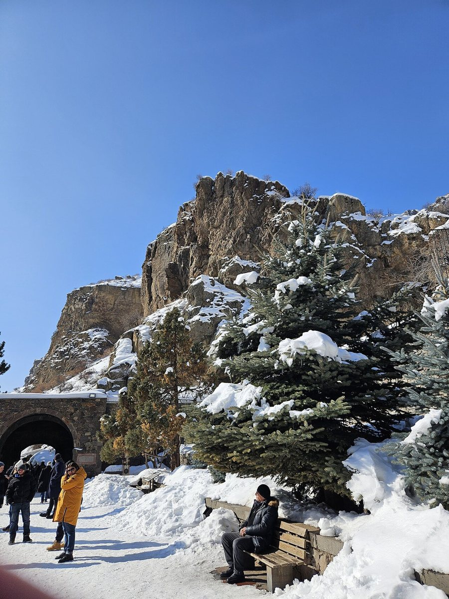
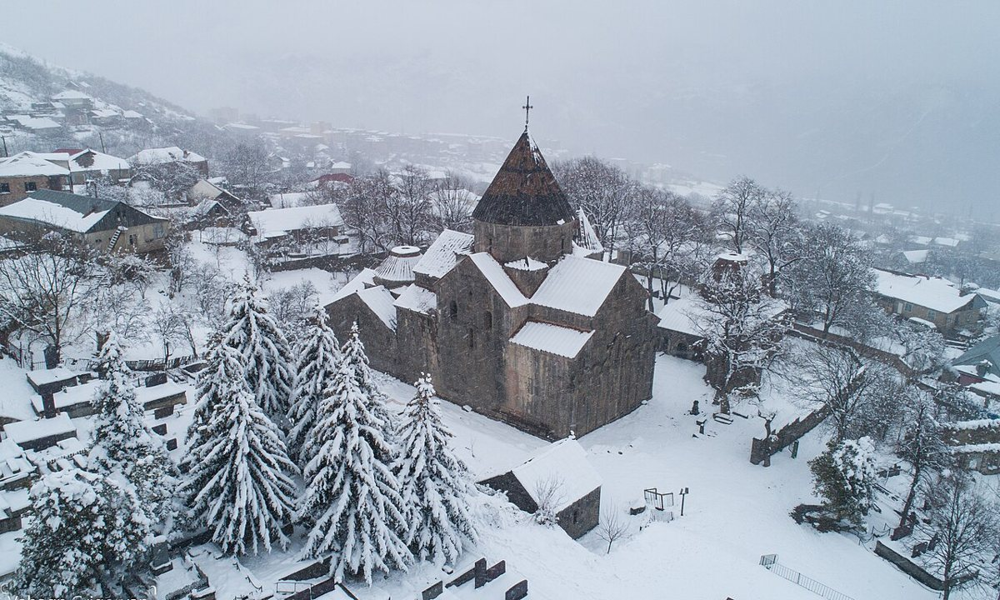
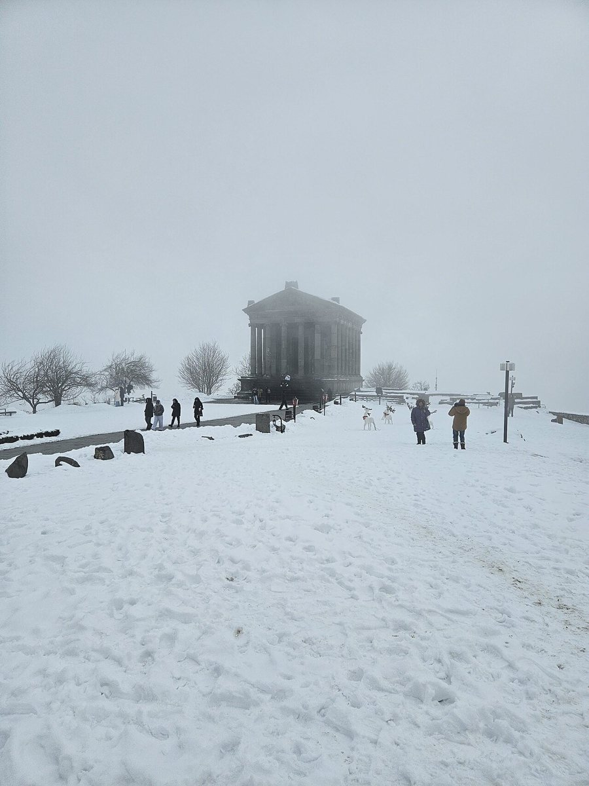
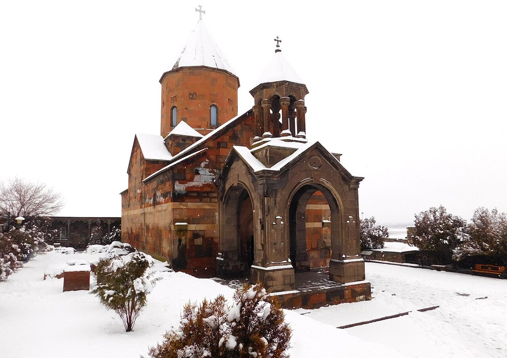
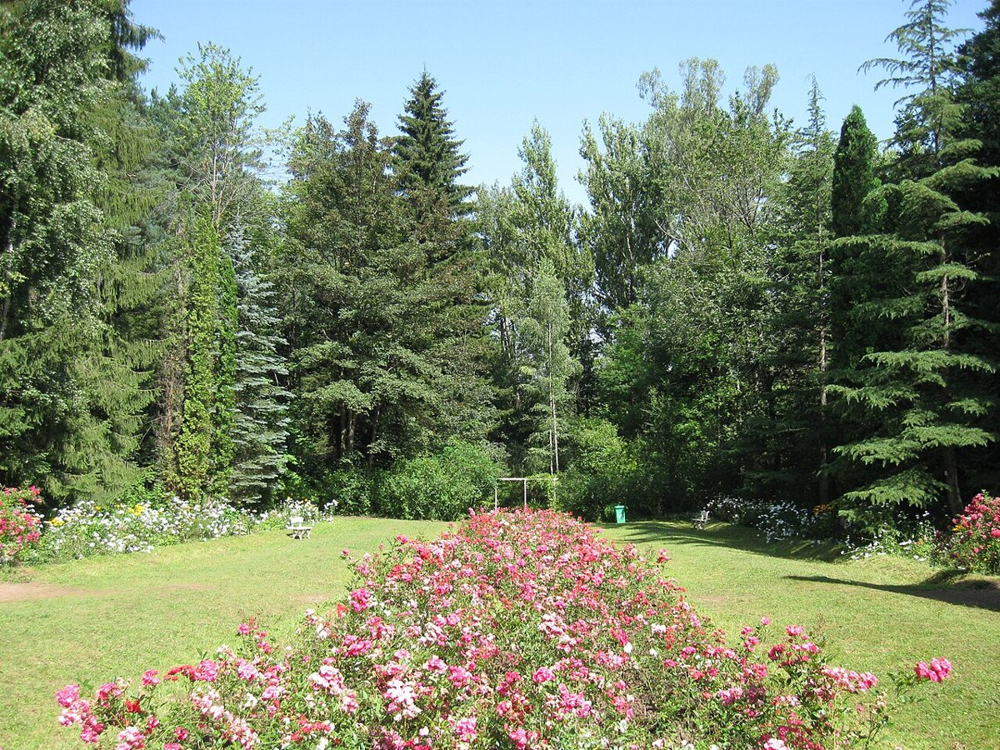
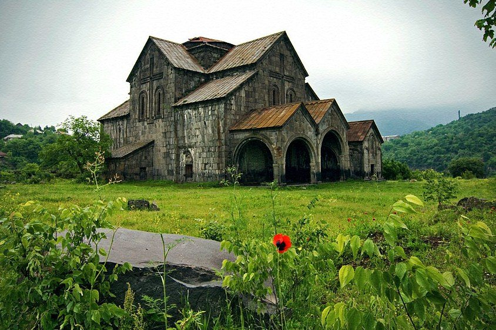
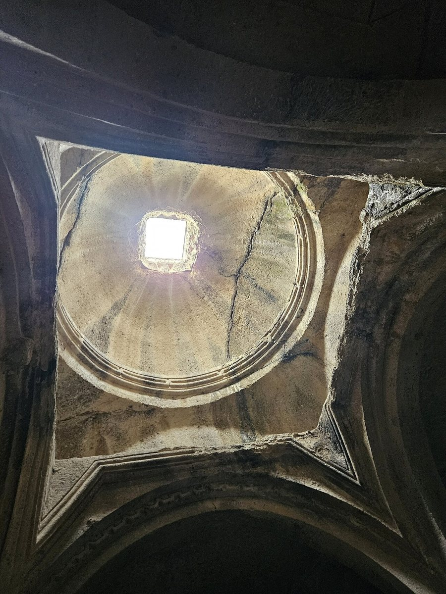

Home / Tours / Spiritual Heritage, Nature & Ancient Wonders
Discover Armenia
Spiritual Heritage, Nature & Ancient Wonders
4 days4 nights12 sights



Duration: 4 Days / 4 Nights
Itinerary
Day 1
Spiritual Armenia
Mother See of Holy EtchmiadzinVisit the spiritual center of the Armenian Apostolic Church and discover Armenia's religious heritage.Zvartnots CathedralExplore the impressive ruins of a 7th-century cathedral, a UNESCO World Heritage Site.

Khor Virap MonasteryDiscover one of Armenia's most iconic monasteries, offering breathtaking views of Mount Ararat.
Day 2
Wine, Monasteries & Mountain Scenery
Areni Wine FactoryDiscover Armenia's winemaking traditions in the famous Areni wine region.Noravank MonasteryAdmire a medieval monastery surrounded by dramatic red-rock cliffs.JermukExplore this mountain resort town, known for its mineral waters, scenic landscapes, and beautiful natural surroundings.
Day 3
Discover Lori's Natural & Historic Treasures

Stepanavan DendroparkEnjoy a peaceful walk through a botanical park featuring diverse trees and plants.Sanahin MonasteryDiscover a medieval monastery complex renowned for its historical and architectural significance.

Akhtala MonasteryExplore a historic monastery famous for its medieval architecture and remarkable frescoes.
Day 4
Ancient Armenia & Natural Wonders
Garni TempleVisit Armenia's famous Greco-Roman-style pagan temple, set against a beautiful mountainous backdrop.Symphony of StonesMarvel at the impressive basalt columns formed by natural geological processes in the Garni Gorge.

Geghard MonasteryExplore a UNESCO World Heritage Site renowned for its medieval churches, including structures carved into the surrounding rock.